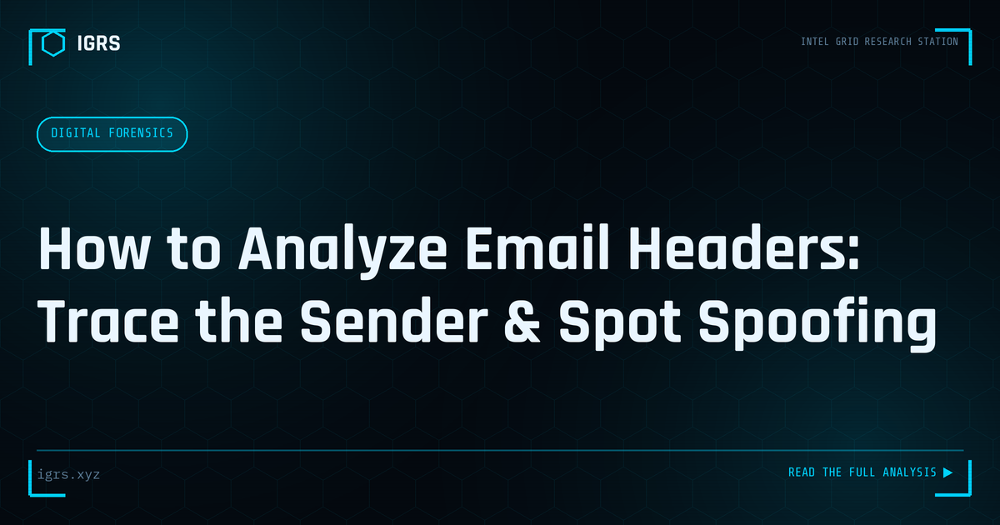

How to Analyze Email Headers: Trace the Sender & Spot Spoofing (Step by Step)
Almost every phishing case, fraudulent invoice and impersonation complaint starts with one artefact: an email. The visible From line is the easiest part of an email to fake, so the real story lives in the headers — the metadata trail that records where the message came from, every server it passed through, and whether it survived authentication. This guide walks through reading that trail end to end: extracting the raw headers, following the relay chain to the originating IP, interpreting SPF, DKIM and DMARC, and recognising the patterns that betray a spoof. You can follow along live with the free, in-browser IGRS Email Header Analyzer.
Step 1 — Get the raw headers
You need the full, unrendered header block, not just what the mail client shows by default.
- Gmail: open the message → the three-dot menu → Show original → copy everything.
- Outlook (desktop): open the message → File → Properties → copy the Internet headers box.
- Outlook on the web / Microsoft 365: open the message → the three-dot menu → View → View message details.
- Apple Mail: select the message → View → Message → All Headers (or Raw Source).
Paste the block into the analyzer, or read it manually using the steps below.
Step 2 — Read the Received chain from the bottom up
Each mail server that handles a message stamps a Received: line at the top of the header block. That means the list is in reverse chronological order: the lowest Received line is the earliest hop — usually closest to the true origin — and the topmost is your own inbox server. Reverse the order mentally (the analyzer does this for you and numbers the hops oldest-first) and note three things at each hop: the sending host (from), the receiving host (by), and the timestamp. Unusual gaps between timestamps, or a first hop from a network that has nothing to do with the claimed sender, are worth a closer look.
Step 3 — Identify the originating IP
Walk up from the bottom and take the first public IP address you encounter — private ranges such as 10.x, 192.168.x and 172.16–31.x are internal and can be skipped. That earliest public IP is your best candidate for where the message actually entered the mail system. Treat it as a strong lead, not a verdict: large providers, relays and forwarders can sit in front of the true sender. Profile it further — network owner, hosting vs residential, abuse history — with the IGRS IP Lookup.
Step 4 — Check authentication: SPF, DKIM, DMARC
Modern mail servers record their verdicts in an Authentication-Results: header. The three checks answer different questions:
| Check | What it proves | A “fail” suggests |
|---|---|---|
| SPF | The sending IP is authorised to send for the envelope domain | Mail sent from an unlisted server (spoof, or a forwarder) |
| DKIM | The message carries a valid cryptographic signature and was not altered | Tampering, or an unsigned/forged message |
| DMARC | SPF/DKIM align with the visible From domain, under the domain’s policy | Strong indicator of spoofing or unaligned sending |
A DMARC fail on a message claiming to come from a bank or government domain is one of the clearest red flags you will find. Be aware, though, that legitimate mailing lists and forwarding can break SPF or DKIM, so weigh authentication against the rest of the evidence rather than treating one failure as conclusive.
Step 5 — Hunt for spoofing red flags
Beyond authentication, three header-level patterns frequently expose impersonation:
- Domain mismatches. Compare the visible
Fromdomain withReturn-Path(the envelope sender) andReply-To. A reply that would silently go to a different domain than the one displayed is a classic business-email-compromise tactic. - Display-name impersonation. A friendly name like “YourBank Security” attached to an unrelated address (for example a generic webmail account) is designed to exploit the fact that most clients show the name, not the address.
- Missing authentication. No SPF/DKIM/DMARC results at all, on a message that claims to be from a serious organisation, is itself suspicious.
A worked example
Consider a message whose visible From is "YourBank Security" <alerts@yourbank.co.in>, but whose headers show Return-Path: bounce@secure-bank-alert.com, Reply-To: support@secure-bank-alert.com, an Authentication-Results line reading spf=fail; dkim=none; dmarc=fail, and an earliest public hop from 198.51.100.23. Every signal points the same way: the envelope and reply domains do not match the displayed bank domain, all three authentication checks fail, and the entry point is an unrelated server. This is a textbook spoof, and the originating IP is the lead to profile and preserve. Pasting these exact headers into the analyzer returns a HIGH RISK verdict with each of these flags itemised.
From finding to evidence (India)
Header analysis routinely underpins action under Indian law. Sending an email while impersonating another person or brand can attract Section 66D of the IT Act, 2000 (cheating by personation using a computer resource) and Section 319 of the Bharatiya Nyaya Sanhita, 2023 (cheating by personation), with Section 318 BNS covering the underlying cheating where money is lost. To trace the sender’s network, the originating IP supports a production request to the relevant provider under Section 94 of the Bharatiya Nagarik Suraksha Sanhita, 2023. Crucially, when the headers or the analysis are to be relied on in a proceeding, preserve the original message and accompany any electronic record with a certificate under Section 63 of the Bharatiya Sakshya Adhiniyam, 2023. Where the incident qualifies, report to CERT-In within the prescribed timelines.
Paste a suspicious email’s headers into the free IGRS Email Header Analyzer — it runs entirely in your browser, surfaces the originating IP, relay path, SPF/DKIM/DMARC and spoofing flags, and never uploads your data.